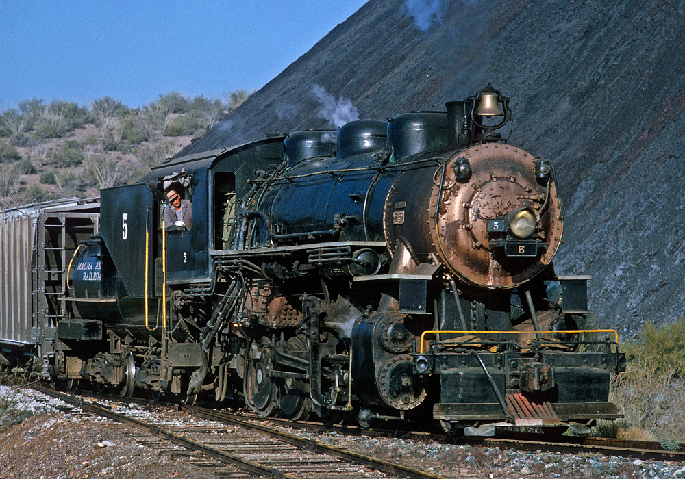
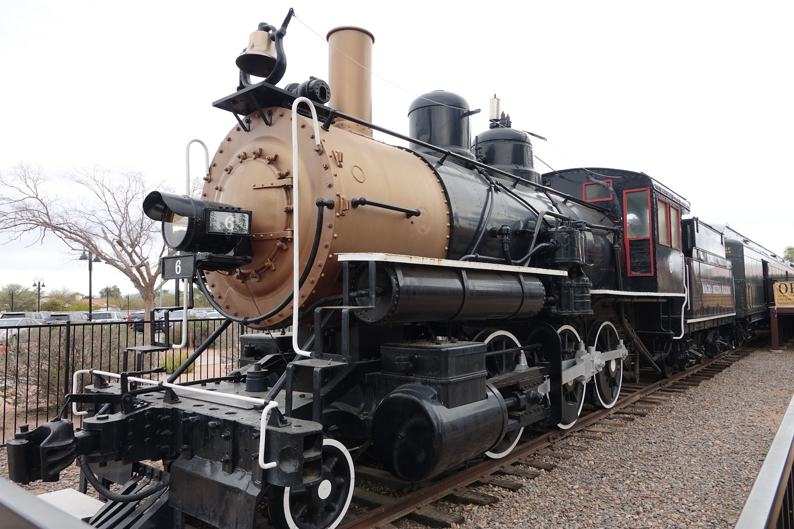
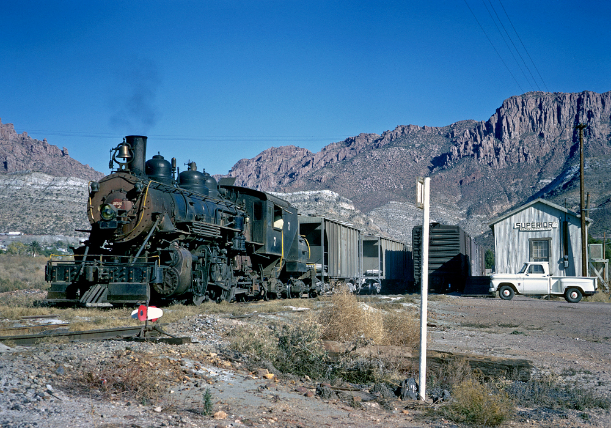
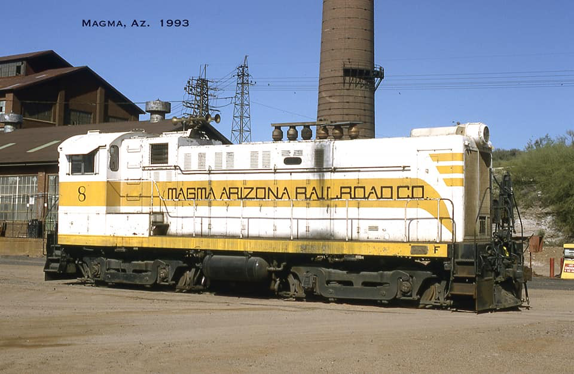
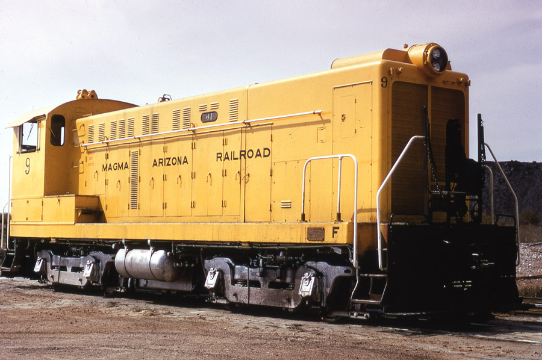
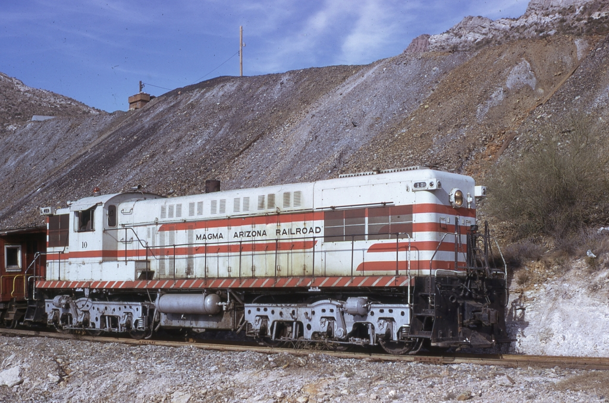

The first engine on the standard gauge Magma, 5 was a 2-8-0 built by ALCo in 1922. It was the only first-hand engine on the standard gauge, and it ran until the 1970s, when it was sold to the Oregon, Pacific, and Eastern. While on the OP&E, it starred in numerous movies, including Emperor of the North.
The second engine on the standard gauge Magma, 6 was a 2-6-0 built by Baldwin in 1907. Funnily enough, it was actually the first engine on the standard gauge, as 5 hadn't arrived from ALCo yet. Originally built for the Arizona and New Mexico, it went through El Paso and Southwestern ownership before being bought by the Magma. It was retired in 1961 and now resides in Scottsdale.
The third engine on the standard gauge, 7 was a 2-8-2 built by Baldwin in 1917. Originally run by the Tremont and Gulf Railroad, it was bought by the Magma in 1950 and ran until 1971, making the Magma one of the last railroads to dieselize. It was sent to the Texas State Railroad, where it resides today in its original paint. In fact, it still runs.
The fourth engine on the standard gauge, 8 was a Baldwin S-8 diesel switcher built in 1952 for the Medford Corporation, 8 was the only S-8 built with dynamic brakes. It ran until around September 1992, when it suffered a catastrophic generator failure. After the Magma went defunct, it was taken by the Southern Oregon Railroad Historical Society to be repainted into Medco colors, where it is stored in operational condition.
The fifth standard gauge engine, 9 was a Baldwin S-12 diesel switcher built in 1953 for the McCloud River Railroad. Both 8 and 9 were painted canary yellow for a time, but 9 was never painted out of it, remaining solid yellow for the rest of its service life. It was stored in a shed in Superior, Arizona until the building was destroyed. Resolution Copper, the company that owned the shed (And 9!) made a facebook post talking about preserving it, but they didn't know where to store it. The engine itself still exists, but it is unknown where.
The sixth and last standard gauge engine, 10 was a Baldwin DRS 6-6-1500 (Which stands for Diesel Road Switcher, 6 axles, 6 traction motors, 1500 horsepower) built for the McCloud River Railroad in 1950. The engine was bought by the Magma in 1969, and wasn't repainted. In fact, the only modification to its paint came in the form of yellow stripes instead of red ones. It ran until 1991, and was donated by Magma Metals to the Arizona Railway Museum in 1994. I volunteer at the AZRM, so I can see it (almost) whenever I want! It is stored outside in operational condition, and it still runs sometimes.
